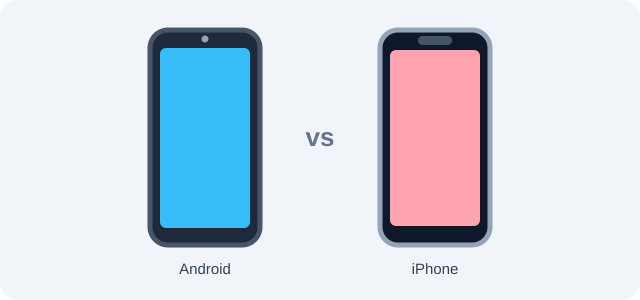

Smartphones / Mid-range
Galaxy A57 or iPhone 17e: which mid-range phone deserves your money
Both arrived in March 2026, both cost roughly the same, and they could hardly be more different. One gives you a big smooth screen and a battery that goes the distance. The other gives you a much faster chip and a long software future.

Samsung Galaxy A57
From $550 (128 GB), US list priceApple iPhone 17e
From $599 (256 GB), US list priceThe answer, before the detail
Split decisionPeople asking this question usually want a winner, and the honest answer is that it depends on what you do all day. If you read, watch video and scroll for hours, the Galaxy A57 will feel nicer to hold and look at, and it will last longer between charges. If you care about how the phone behaves in three or four years, how fast it stays, and how much it will fetch when you sell it, the iPhone 17e is the stronger long-term buy.
The gap in price is small in the United States, around fifty dollars at the starting tiers, and it shrinks further when you compare the same storage. That is why this choice is difficult. You are not saving a lot by picking the cheaper phone, so the decision comes down to features rather than money.
The rest of this page takes each area in turn, and ends with a plain recommendation for four kinds of buyer.
The two phones on one page
ReferenceStart with the numbers. They come from manufacturer pages and a set of published reviews, and where sources disagree we say so below the table.
| Spec | Galaxy A57 | iPhone 17e |
|---|---|---|
| Announced | March 2026 | March 2026 (on sale 11 March) |
| Display | 6.7 in Super AMOLED+, 120 Hz, up to 1,900 nits | 6.1 in OLED, 60 Hz |
| Processor | Exynos 1680, 4 nm | Apple A19 |
| Memory and storage | 8 GB or 12 GB; 128, 256 or 512 GB; no microSD | 8 GB; 256 or 512 GB |
| Rear camera | 50 MP main with stabilisation, 12 MP ultrawide, 5 MP macro | 48 MP main (Apple calls it Fusion) |
| Front camera | 12 MP | 12 MP with autofocus |
| Battery | 5,000 mAh | 4,005 mAh |
| Charging | 45 W wired, no wireless | USB-C, 15 W wireless with MagSafe |
| Unlock | In-screen fingerprint | Face ID |
| Software at launch | Android 16, One UI 8.5 | iOS 26 (now updatable to iOS 27) |
| Update promise | Six years of OS and security updates | No fixed pledge; iPhones typically get seven or more |
| Size and weight | 161.5 x 76.8 x 6.9 mm, 179 g | 146.7 x 71.5 x 7.8 mm, 169 g |
One detail is contested. Dust and water resistance for the A57 is listed as IP68 by some reviewers and IP67 by at least one specification database, and the iPhone 17e is rated IP68. Confirm the exact rating on Samsung's page for your region before relying on it near water.
Size and how it feels in the hand
Depends on youThe most immediate difference has nothing to do with software. The A57 is a big phone. Its 6.7-inch screen sits in a body that is about fifteen millimetres taller and five wider than the iPhone 17e. In exchange for that size you get room for a bigger battery, and Samsung has made the phone thinner and lighter than last year's A56, so it feels less bulky than the numbers suggest.
The iPhone 17e is a more compact phone, and reviewers who tried it praised the way it sits in a small hand or slides into a pocket. It is a little thicker and a few grams lighter overall. If you type with one thumb or wear tight clothing, that difference matters more than any spec on a slide.
A practical way to decide is to go to a shop and hold both for two minutes. Most people know within a minute whether the 6.7-inch body feels natural or awkward, and no review can tell you that.
The screen
Edge: Galaxy A57This is the clearest win on the page. The A57 uses a 6.7-inch Super AMOLED+ panel that runs at 120 Hz and reaches about 1,900 nits at its peak. The iPhone 17e has a 6.1-inch OLED at 60 Hz. Both are sharp and colourful, and the iPhone's pixel density is actually higher, but the difference in size and smoothness is obvious the moment you scroll.
A 120 Hz display redraws the picture twice as often as a 60 Hz one. In practice, scrolling a long web page or a social feed looks smoother, and small animations feel more responsive. It is one of those features you barely notice until you go back to a phone without it. Reviewers pointed out that Apple has now added faster displays to its standard iPhone, which makes the 60 Hz panel on the 17e look conservative at this price.
The A57's screen is also noticeably better in bright sunlight, thanks to the high peak brightness. If you use your phone outdoors a lot, that counts. The iPhone's screen is protected by the second generation of Apple's Ceramic Shield glass, which Apple says resists scratches roughly three times better than the previous model, while the A57 uses Gorilla Glass Victus+.
The iPhone has one advantage worth mentioning: Face ID. The A57 relies on a fingerprint sensor under the display, which works fine but is a step less convenient when your hands are wet or gloved.
Speed and performance
Edge: iPhone 17eHere the iPhone wins, and not narrowly. It uses the A19, the same family of chip as the standard iPhone 17, with a slightly reduced graphics unit. The Galaxy A57 uses Samsung's Exynos 1680, a modest update over last year's chip, with one more performance core and slightly higher clock speeds on the efficiency cores.
In one comparison site's listing, the iPhone scored around 8,200 in the multi-core Geekbench test against roughly 4,500 for the Galaxy. performance score numbers are only a guide, and different sites publish different results, but the direction is consistent across every review we read. The A19 is much faster.
What does that mean for daily life? For messaging, browsing, video and photo apps, both phones are perfectly capable. One reviewer who normally uses a folding flagship said the A57 felt fine in everyday use, with quick app launches and smooth scrolling. The gap shows up in heavy work: long gaming sessions, editing video, and switching between demanding apps. One UK review noted that the A57 can show slight throttling and dropped frames during intense games.
The more important difference is how the two ages. A fast chip stays useful for longer. If you expect to keep the phone for five years or more, the extra headroom in the iPhone gives it a better chance of still feeling quick at the end. If you replace phones every two years, you will probably never notice.
Cameras
Edge: depends on how you shootCamera specs are the easiest to misread, because the number of lenses does not tell you the quality of the pictures. The A57 has three at the back: a 50 MP main camera with optical stabilisation, a 12 MP ultrawide and a 5 MP macro. The iPhone 17e has one, a 48 MP main camera that Apple markets as a two-in-one system, because it can crop into the sensor for a 2x view it describes as optical-quality. That is a crop of the sensor and not a separate lens, which is worth knowing when you compare it with a true telephoto.
Where the A57 pulls ahead
It has an ultrawide lens and the iPhone does not. If you photograph buildings, groups of people in tight rooms or landscapes, the ability to fit more in the frame is genuinely useful. The A57 also lets you switch between the main and ultrawide cameras smoothly while recording, which reviewers noted many phones at this price cannot do.
Where the iPhone pulls ahead
Apple has a strong reputation for video and consistent colour, and reviewers of the 17e echoed that. Its single camera is dependable, and the front camera has autofocus, which helps with selfies and video calls. Some testers said the iPhone's camera is not as versatile as rivals, but it is very reliable point and shoot.
The macro lens is not a selling point
Nearly every reviewer who tested the A57 dismissed the 5 MP macro camera as a marketing feature. It has fixed focus and produces weak results, and you get better close-ups by zooming in with the main camera. Do not let the words "triple camera" tip your decision. In reality the A57 has two useful cameras, and that is still one more than the iPhone.
Video is capped at 4K at 30 frames per second on the A57, and one review found night footage with a warm, reddish tint. If you shoot a lot of video, especially in low light, lean toward the iPhone.
Battery and charging
Edge: Galaxy A57The A57 has a 5,000 mAh battery, and the iPhone 17e a 4,005 mAh one. Capacity is not everything, since Apple's software is efficient, and reviewers describe the iPhone's battery life as decent, but it will not match a phone with a battery a quarter larger. If you often end the day on low charge, the Samsung is the safer choice.
The charging story is more mixed. The A57 supports 45 W wired charging, and one review reported about 60 percent in roughly half an hour with a suitable charger. The iPhone charges more slowly over the cable, though reviewers noted around half a battery in thirty minutes. Where Apple leads is wireless charging. The 17e brings back MagSafe with support for 15 W, and an entire ecosystem of magnetic chargers, stands and cases works with it. The A57 has no wireless charging at all.
Software and how long you can keep it
Both strongTen years ago this was the weak spot for Android. Now it is a strength. Samsung promises six years of Android and security updates on the A57, which takes it into the early 2030s, and it ships with Android 16 and One UI 8.5. That is long by any standard for a phone at this price.
Apple has not published a fixed number for the 17e, but its record is clear. The latest release, iOS 27, runs on phones as old as the iPhone 11 from 2019. Reviewers expect around seven years or more of updates for a new model, and the used-phone market tends to reflect that.
The two experiences differ in style. One UI gives you more options: you can change how the phone looks, use a split screen, and customise the home screen in ways iOS does not allow. iOS is simpler and more consistent. Which you prefer is largely a matter of habit. If you have used one for years, switching costs time and patience, and it is worth reading our guide to the Apple and Samsung ecosystems before you cross over.
Price, storage and what you really pay
Edge: iPhone 17e (narrowly)At list prices in the United States, the A57 starts at $550 for 128 GB, while the iPhone 17e starts at $599 for 256 GB. That looks like a fifty dollar saving for Samsung, but the storage is not equal. A 256 GB Galaxy costs more than the base model, so when you compare like for like the gap narrows and can disappear. The A57 also offers 512 GB, and it has no microSD slot, so what you buy is what you keep. The iPhone 17e comes in 256 and 512 GB.
Real prices will look different for you. Samsung tends to discount its A-series phones quickly, and retailers often lower them within weeks of launch. Apple's e-series holds its price better, which is also part of why it keeps its resale value.
Three checks before you buy in Uzbekistan
- SIM type. The US iPhone 17e is reported to be eSIM only. Versions sold in other regions may include a physical SIM tray. Confirm this for the exact model, and check that your mobile operator supports eSIM.
- Warranty. A phone from an official seller usually comes with a local warranty. A grey import may not, and repairs can be slow or costly.
- Regional model. Specifications such as the water rating, chip or included accessories can differ by market. Look at the model number on the box, not just the name.
The smaller things that add up
Worth a lookOnce you have weighed the big categories, a handful of smaller differences can tip the balance. None of them decides the choice by itself, but together they shape how the phone feels after the first month.
Connectivity
Both phones handle 5G, Wi-Fi and NFC payments. The A57 adds support for Wi-Fi 6E and Bluetooth 6.0, which matter if you own a recent router or newer accessories. Apple built its own C1X modem into the 17e, and the company says it is up to twice as fast as the modem in last year's model. Modem claims are hard to verify from a spec sheet, and real-world signal depends on your operator, so treat both as pleasant extras and not as reasons to buy.
Accessories
MagSafe is quietly one of the strongest arguments for the iPhone. Because the phone has magnets, it works with car mounts, desk stands, wallets and power banks that snap on and stay put. If you already use, or plan to buy, that kind of accessory, the 17e slots into a large existing market. The Samsung is a more traditional phone. It has plenty of cases and chargers available, but nothing that attaches magnetically as standard.
Durability and repair
Both phones are built from an aluminium frame and glass, and both are sold as dust and water resistant. Apple has fitted the 17e with the newer Ceramic Shield, and Samsung uses its own tough glass. In practice, a case and a screen protector matter more than the glass choice, because most damage comes from a hard drop on a corner. Repair programmes exist from both companies in some countries. Availability in Uzbekistan is something to ask a local service centre before you buy, because a phone you cannot get fixed nearby is a riskier purchase whatever the specs say.
Extra software features
Samsung ships the A57 with new AI and camera features in One UI 8.5, and it has spent years building tools such as split-screen multitasking and a customisable home screen. One reviewer noted that most of the new software tends to reach older Samsung phones later, so a new A57 is not the only route to those features. Apple's own smart features on iOS are tied to the chip. The A19 gives the 17e access to what Apple has announced this year, but the range of features differs by language and region, so check what is available where you live.
What the phone looks like in two years
Edge: iPhone 17eMost comparisons focus on launch day, but you will spend far more time with a two-year-old phone than a new one. It helps to ask what changes between now and then.
The battery wears. Every lithium battery loses capacity as it is charged, and after two years of daily use it will hold less than it did on day one. A larger starting capacity, as on the A57, gives you a cushion, so a Galaxy at eighty percent health may still outlast an iPhone at ninety. Replacing a battery is possible on both phones, and it is a cheap way to extend the life of either one.
The software changes. Both companies will keep sending updates, and both will add features that lean on newer hardware. Because the A19 is so much faster, the iPhone is more likely to keep running new features smoothly, while a mid-range Exynos may start to feel slow once apps grow heavier. This is the main reason we give the iPhone a slight edge for keeping power.
The resale value differs. Used iPhones are in steady demand and generally keep more of their price than mid-range Android phones. If you like to sell your phone and buy a new one every two or three years, that gap can offset the small difference in the purchase price. If you tend to keep phones until they fail, resale matters much less, and the A57's lower upfront cost and bigger battery become more attractive.
Here is a simple way to think about it. Add the price you pay today, subtract what you expect to get when you sell, and divide by the number of years you will use the phone. On that measure the two phones can end up very close, even though the sticker prices differ. It is worth doing that sum with the real prices at your local shop.
Who should buy which
RecommendationsHere is how we would split it, based on the differences above.
Choose the Galaxy A57 if
- You watch a lot of video or read on your phone
- You want a battery that lasts a full day and more
- You like a bigger screen and do not mind the size
- You want an ultrawide camera
- You already use a Samsung watch, TV or tablet
Choose the iPhone 17e if
- You plan to keep the phone for five years or longer
- You play demanding games or edit video
- You prefer a compact phone
- You want strong video and Face ID
- You use a Mac, an iPad or an Apple Watch
Four short cases
The student. Long days, lots of video and notes, limited budget. The A57's screen and battery make it the sensible pick, and Samsung's frequent discounts help.
The parent. A phone that will be dropped, shared and used for photos of children. The iPhone's reliable point-and-shoot camera and simple software are easier to hand around, and the small size fits a pocket or a small hand.
The gamer on a budget. Lean towards the iPhone 17e. The A19 has far more graphics headroom, and the 60 Hz screen matters less for many games than the chip does.
The one who wants it to last. Both are good, but the iPhone's speed and typical resale value give it a slight edge. If Samsung's six-year pledge is enough for you, the A57 is a fair alternative, especially if it is discounted.
Questions people ask
FAQIs the iPhone 17e really that much faster than the Galaxy A57?
In performance scores, yes, by a wide margin. In everyday use, most people will not feel it. The difference matters for demanding games, editing, and how well the phone keeps up as it ages.
Does the Galaxy A57 have wireless charging?
No. It charges by cable only, at up to 45 W. If you want a wireless or magnetic charger, the iPhone 17e supports MagSafe at up to 15 W.
Which phone has the better camera?
They are good at different things. The A57 has an ultrawide lens and flexible framing. The iPhone 17e is more reliable for video and quick shots. The macro lens on the Samsung is not worth using.
Will both phones get updates for many years?
Samsung promises six years for the A57. Apple has no stated number for the 17e, but iPhones have typically been supported for seven years or longer.
Should I wait for something newer?
Apple has just launched its new Pro models and plans a standard iPhone 18 later, and Samsung releases new A-series phones roughly every year. If you need a phone now, either of these will serve you well. Waiting mainly makes sense if you want to catch a price drop.